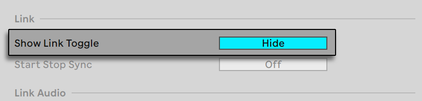
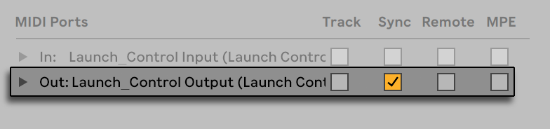
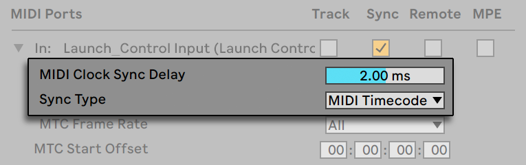

36. Synchronizing with Link, Tempo Follower, and MIDI
When working with other Ableton products or instances of Live, collaborating across multiple devices, or integrating external hardware, you can use Live to synchronize different parts of your setup. Ableton Link allows you to sync tempo and timing between compatible apps and devices and Link Audio makes it possible to stream audio between them. You can use Tempo Follower to adapt Live’s tempo to an incoming audio source, or use MIDI Sync to send or receive timing information in Live from external hardware and software via MIDI.
36.1 Synchronizing via Link
Ableton Link is a technology that synchronizes musical beat, tempo, and phase across multiple applications or devices over a wired or wireless network. Link Audio extends Link by making it possible to stream audio in real-time between Link session participants, or peers, without additional hardware or complex routing setups.
Link and Link Audio are built into all Ableton products as well as a growing number of third-party apps and hardware devices. Any participant of a Link session can start and stop playback independently and remain in time and phase with connected peers, with playback following the global launch quantization. Any participant can adjust the tempo and the change will be reflected in all connected apps or devices. Participants can join or leave at any time without interrupting the synchronization between other peers.
You can synchronize via Link alongside Tempo Follower or MIDI synchronization. In both cases, Live will use the tempo received from the external input for the Link session.
36.1.1 Setting up Link and Link Audio
You can configure Link and Link Audio by opening the dedicated tab in Live’s Settings.

The Link toggle used for enabling Link is displayed in the Control Bar by default but if you are not intending to use Link, you can hide the toggle from the Control Bar by setting the Show Link Toggle option to Hide.

The drop-down menu next to the Link toggle allows you to quickly switch core Link and Link Audio functionalities on or off. It also includes a list of any connected peers who have the Link Audio option enabled, as well as the Configure Link… option which opens the Link tab in Live’s Settings.
You can sync start and stop commands across peers by enabling the Start Stop Sync option. Note that the commands will only be synced for peers that also have this option enabled.

The other settings on the page are related to Link Audio.

The Audio option enables or disables Link Audio. Note that Link Audio only works when the Link toggle in the Control Bar is also enabled.
Use the Name field to set the name shown to other peers in a Link session.
The Latency slider allows you to adjust the input latency applied to incoming audio. As the latency is adjusted, the amount of buffered audio is updated for each participant in the peer list below.
When the Sync to Incoming Audio option is enabled, the audio received via Link Audio and monitored through Live is kept in sync with Live’s audio and clips. This is achieved by delaying Live’s playback by the specified latency amount. Note this option should only be enabled by one of the session’s participants for Link Audio to work.
The peers list displays all connected Link Audio peers, along with their status and buffered audio amount.
36.1.2 Using Link
To use Link in Live, make sure that your computer is connected to the same network as any other devices that you want to sync with. You can use either a stable Wi-Fi network or a wired connection. Then, click on the Link toggle in the Control Bar to enable Link. Live will automatically start or join a Link session.
Once Link is enabled, the toggle will display the number of peers available in the Link session.
If at least one other Link-enabled peer is connected, the Arrangement Position control will show a progress bar animation whenever Live’s transport is not running. The progress bar represents the Live Set’s global launch quantization in relation to that of the other participants in the Link session. After you trigger playback, Live will wait until the progress bar completes before starting playback.
The first participant to join a Link session sets the initial tempo for other connected peers. Any peer can then change the tempo at any time and the other participants will follow. If multiple participants try to change the tempo simultaneously, everyone else will try to follow, but the tempo will be set by the last participant who made the change. Tempo changes made by a Link session participant will override tempo automation in your Live Set.
Note that the metronome’s recording count-in cannot be used when Link is enabled.
Link generally works without issues as soon as it is enabled and provides reliable synchronization in most scenarios. If you run into any problems, check out the Link FAQ in the Knowledge Base.
36.1.3 Using Link Audio
When enabled, Link Audio allows you to stream audio in real time between Link-enabled devices on the same network. This makes it possible to monitor and record audio from other devices and applications directly in Live. To use Link Audio, make sure that both Link and Link Audio are enabled for all the peers.
Once enabled, the audio from other Link session participants becomes available as an input source in Live. To monitor the incoming audio, select a peer via the Input Type chooser in an audio track where monitoring is set to In or an armed track where monitoring is set to In or Auto, then select the desired source track using the Input Channel chooser. To record the incoming audio, make sure your audio track is armed, then select a peer and source track via the choosers.

All tracks with audio output can be streamed to connected peers. Note that in Live and on Push, it is possible to both send and receive audio via Link Audio, while other applications and devices may support sending only.
If you run into any issues with Link Audio, have a look at the Link Audio FAQ in the Knowledge Base.
36.2 Synchronizing via Tempo Follower
You might encounter situations where a Link connection or MIDI Clock are not available. Or, sometimes you might prefer not to use a rigid, computer-generated clock. For example, you might like Live’s tempo to follow the natural push and pull of a drummer in your band, or you might be trying to synchronize to a set of turntables during a DJ performance. This is where Tempo Follower comes in. Tempo Follower analyzes an incoming audio signal in real-time and interprets its tempo, allowing Live to follow along and keep in time.
36.2.1 Setting Up Tempo Follower
To set an external audio input as a source for Tempo Follower, first open Live’s Tempo & MIDI Settings. In the Tempo Follower section, set the Input Channel (Ext. In) to the input on your audio interface that is connected to the source you wish to follow. For a drum kit, this might be a dedicated overhead microphone. For turntables, you might choose to use a record output or effects loop from a DJ mixer. Note that while Tempo Follower’s algorithm is optimized for use with audio signals that have a clear rhythm, you can also be creative and experiment with different sources.

When the Show Tempo Follower Toggle option is enabled, you will see the Tempo Follower toggle appear in the Control Bar, alongside the other tempo-related parameters, at the left-hand side.

Activating the “Follow” button will turn on Tempo Follower, and Live will begin listening to the configured audio source and interpreting its tempo. Note that Tempo Follower does not run when the Follow button is hidden.
When Tempo Follower cannot be connected to the audio input device channel specified in the Settings, the feature is disabled and the Follow button will appear grayed out.
Note that Tempo Follower and External Sync are mutually exclusive and the External Sync option is disabled when Tempo Follower is active. Live can still send MIDI clock information to external devices when Tempo Follower is enabled, but it cannot receive it.
36.3 Synchronizing via MIDI
If you’re working with devices that don’t support Link, you can synchronize via MIDI. The MIDI protocol defines two ways to synchronize sequencers, both of which are supported by Live. Both protocols work with the notion of a sync host, which delivers a sync signal that is tracked by the sync device(s).
MIDI Clock: MIDI Clock works like a metronome ticking at a fast rate. The rate of the incoming ticks is tempo-dependent: Changing the tempo at the sync host (e.g., a drum machine) will cause the device to follow the change. The MIDI Clock protocol also provides messages that indicate the song position. With respect to MIDI Clock, Live can act as both a MIDI sync host and device.
MIDI Timecode: MIDI Timecode is the MIDI version of the SMPTE protocol, the standard means of synchronizing tape machines and computers in the audio and film industry. A MIDI Timecode message specifies a time in seconds and frames (subdivisions of a second). Live will interpret a Timecode message as a position in the Arrangement. Timecode messages carry no meter-related information; when slaving Live to another sequencer using MIDI Timecode, you will have to adjust the tempo manually. Tempo changes cannot be tracked. Detailed MIDI Timecode Settings are explained later in this chapter. With respect to MIDI Timecode, Live can only act as a MIDI sync device, not a host.
36.3.1 Synchronizing External MIDI Devices to Live
Live can send MIDI Clock messages to an external MIDI sequencer (or drum machine). After connecting the sequencer to Live and setting it up to receive MIDI sync, turn the device on as a sync destination in Live’s Tempo & MIDI Settings.

The lower indicator LED next to the Control Bar’s EXT button will flash when Live is sending sync messages to external sequencers.
36.3.2 Synchronizing Live to External MIDI Devices
Live can be synchronized via MIDI to an external sequencer. After connecting the sequencer to Live and setting it up to send sync, use Live’s Tempo & MIDI Settings to tell Live about the connection.

When an external sync source has been enabled, the EXT button appears in the Control Bar. You can then activate external sync either by switching on this button or by using the External Sync command in the Options menu. The upper indicator LED next to the EXT button will flash if Live receives useable sync messages.

When Live is synced to an external MIDI device, it can accept song position pointers from this device, syncing it not only in terms of tempo but in terms of its position in the song. If the host jumps to a new position within the song, Live will do the same. However, if the Control Bar’s Loop switch is activated, playback will be looped, and song position pointers will simply be “wrapped“ into the length of the loop.
36.3.2.1 MIDI Timecode Options
Timecode options can be set up per MIDI device. Select a MIDI device from the Tempo & MIDI Settings’ MIDI Ports list to access the settings.
The MIDI Timecode Frame Rate setting is relevant only if “MIDI Timecode“ is chosen from the MIDI Sync Type menu. The MIDI Timecode Rate chooser selects the type of Timecode to which Live will synchronize. All of the usual SMPTE frame rates are available. When the Rate is set to “SMPTE All,“ Live will auto-detect the Timecode format of incoming sync messages and interpret the messages accordingly. Note that you can adjust the Timecode format that is used for display in the Arrangement View: Go to the Options menu, and then access the Time Ruler Format sub-menu.
The MIDI Timecode Offset setting is also only relevant if “MIDI Timecode“ is chosen from the Sync Type menu. You can specify a SMPTE time offset using this control. Live will interpret this value as the Arrangement’s start time.
36.3.3 Sync Delay
The Sync Delay controls, which are separately available for each MIDI device, allow you to delay Live’s internal time base against the sync signal. This can be useful in compensating for delays incurred by the signal transmission. The Sync Delay for a specific MIDI device appears as you select the MIDI device from the Tempo & MIDI Settings’ MIDI Ports list. To adjust the delay, have both Live and the other sequencer play a rhythmical pattern with pronounced percussive sounds. While listening to the output from both, adjust the Sync Delay control until both sounds are in perfect sync.
